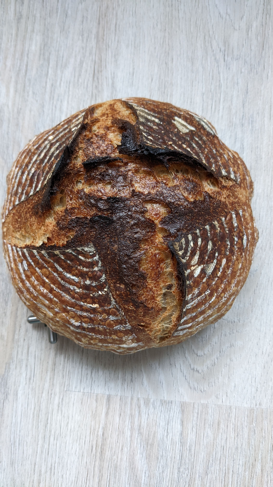

Country Sourdough Bread Recipe

Description
Here is a simple sourdough bread that will blow your mind. The taste is very pleasant and the texture very succulent.
It's best to enjoy this with a slice of butter and jam. You need a strong sourdough starter, good bread flour, salt,
filtered water, and patience. That's it!
Ingredients
- 100grams fed and mature sourdough starter
- 375grams water
- 450grams bread flour
- 50grams whole wheat flour
- 10grams salt
Steps
- Dissolve salt into water
- Stir sourdough starter into salt and water mix
- Combine flour and mix well by hand
- Knead for a few minutes or slap and fold until dough comes together and all
dried flour is gone
- Move dough into a new container
- For every 30 minutes, gently fold the dough onto itself. This needs to be done
4 times in a span of 2 hours
- Let the dough ferment at room temperature for the next 2 hours
- After 4 hours, dough should pass the window pane test and starts to smell a little sour
- Transfer dough onto a baneton that has been lightly dusted with rice flour
- Cover and move baneton to fridge and let it sit overnight
- The next day, preheat oven to 220C with a dutch oven in it
- Take out dough from baneton and score the top of the dough
- Carefully transfer the dough to dutch oven and bake covered for 20 minutes
- Lower the temperature of oven to 180C and uncover the dutch oven, bake for another 20 minutes
- When done, take out bread from dutch oven and let cool for at least one hour